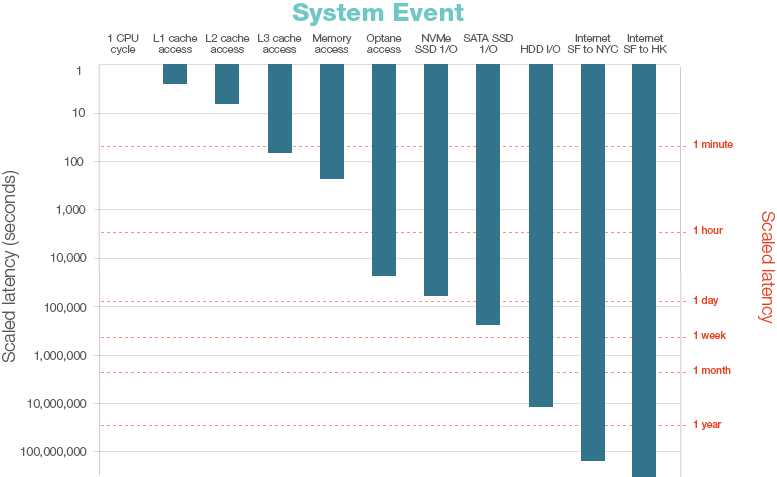

Distributed Computing: Distributed standard library
Contents
Distributed Computing: Distributed standard library#
What
single Julia process -> multiple Julia processes that coordinate to perform certain computations
Why
Scaling things up: run computations on multiple CPU cores, potentially even on different machines, e.g. nodes of a supercomputer or a local cluster of desktop machines.
Effectively increase your memory: process a large dataset, which wouldn’t fit into local memory, in parallel across multiple machines with separate dedicated RAM.
Julia provides two fundamental implementations and paradigms
Julia’s built-in
Distributedstandard librarycontroller-worker model
Message Passing Interface (MPI) through MPI.jl
Single Program Multiple Data (SPMD)
The focus of this notebook is on the Distributed standard library.
Distributed Standard Library#
Julia’s Distributed follows a controller-worker paradigm for its native distributed parallelism: One controller process coordinates all the worker processes, which perform the actual computations.
using Distributed
nprocs()
1
nworkers() # the controller is considered a worker as long as there are no real workers
1
To increase the number of workers, i.e. Julia processes, from within a Julia session we can dynamically call addprocs.
Alternatively, when starting Julia from the command line, one can use the -p option up front. Example,
julia -p 4
will start Julia with 5 processes, 1 controller and 4 workers.
addprocs(4)
4-element Vector{Int64}:
2
3
4
5
Every process has a Julia internal pid (process id). The controller is always 1. You can get the workers pids from workers().
workers()
4-element Vector{Int64}:
2
3
4
5
Note that the 4 worker’s pids aren’t necessarily 2, 3, 4 and 5 and one shouldn’t rely on those literal values. Let’s remove the processes and add them once more.
rmprocs(workers())
Task (done) @0x00007efb81639cd0
nworkers() # only the controller is left
1
addprocs(4)
4-element Vector{Int64}:
6
7
8
9
workers()
4-element Vector{Int64}:
6
7
8
9
One Controller to Rule Them All - @spawn, @spawnat, @fetch, @fetchfrom, @everywhere…#
To execute commands and start computations on workers we can use the following macros
@spawn: run a command or a code block on any worker and return aFutureto it’s result. It’s basically a version of@asyncfor remote processes.@spawnat: same as@spawnbut one can choose a specific worker by providing its pid.
Example: Let’s say we would like to generate a random matrix on one of the workers.
@spawn 3 + 3 # similar to @async
Future(6, 1, 10, ReentrantLock(nothing, 0x00000000, 0x00, Base.GenericCondition{Base.Threads.SpinLock}(Base.InvasiveLinkedList{Task}(nothing, nothing), Base.Threads.SpinLock(0)), (0, 139625743647040, 139625685568400)), nothing)
result = @spawn 3 + 3
Future(7, 1, 11, ReentrantLock(nothing, 0x00000000, 0x00, Base.GenericCondition{Base.Threads.SpinLock}(Base.InvasiveLinkedList{Task}(nothing, nothing), Base.Threads.SpinLock(0)), (3, 139625092352000, 0)), nothing)
fetch(result)
6
Because the combination of spawning at fetching is so common, there is @fetch which combines them.
@fetch 3 + 3
6
@fetch rand(3, 3)
3×3 Matrix{Float64}:
0.64994 0.973973 0.534955
0.6816 0.977513 0.79925
0.253518 0.28954 0.998655
Which worker did the work?
@fetch begin
println("Hello, I am $(myid())")
3 + 3
end
From worker 6: Hello, I am 6
6
Using @spawnat and @fetchfrom we can delegate the work to a specific worker.
@fetchfrom 7 begin
println(myid())
3 + 3
end
From worker 7: 7
6
We can use @sync as a blocker to wait for all workers to complete their tasks.
@sync begin
pids = workers()
@spawn (sleep(2); println("Today is reverse day!"))
@spawn (sleep(1); println(" class!"))
@spawn println("Hello")
println(pids)
end;
println("Done!")
[6, 7, 8, 9]
From worker 9: Hello
From worker 8: class!
From worker 7: Today is reverse day!
Done!
Ok, now that we understood all that, let’s delegate a complicated calculation
using Random
function complicated_calculation()
sleep(1) # so complex that it takes a long time :)
randexp(5)
end
@fetch complicated_calculation()
On worker 6:
UndefVarError: #complicated_calculation not defined
Stacktrace:
[1] deserialize_datatype
@ /usr/local/julia/share/julia/stdlib/v1.8/Serialization/src/Serialization.jl:1364
[2] handle_deserialize
@ /usr/local/julia/share/julia/stdlib/v1.8/Serialization/src/Serialization.jl:866
[3] deserialize
@ /usr/local/julia/share/julia/stdlib/v1.8/Serialization/src/Serialization.jl:813
[4] handle_deserialize
@ /usr/local/julia/share/julia/stdlib/v1.8/Serialization/src/Serialization.jl:873
[5] deserialize
@ /usr/local/julia/share/julia/stdlib/v1.8/Serialization/src/Serialization.jl:813 [inlined]
[6] deserialize_global_from_main
@ /usr/local/julia/share/julia/stdlib/v1.8/Distributed/src/clusterserialize.jl:160
[7] #5
@ /usr/local/julia/share/julia/stdlib/v1.8/Distributed/src/clusterserialize.jl:72 [inlined]
[8] foreach
@ ./abstractarray.jl:2774
[9] deserialize
@ /usr/local/julia/share/julia/stdlib/v1.8/Distributed/src/clusterserialize.jl:72
[10] handle_deserialize
@ /usr/local/julia/share/julia/stdlib/v1.8/Serialization/src/Serialization.jl:959
[11] deserialize
@ /usr/local/julia/share/julia/stdlib/v1.8/Serialization/src/Serialization.jl:813
[12] handle_deserialize
@ /usr/local/julia/share/julia/stdlib/v1.8/Serialization/src/Serialization.jl:870
[13] deserialize
@ /usr/local/julia/share/julia/stdlib/v1.8/Serialization/src/Serialization.jl:813
[14] handle_deserialize
@ /usr/local/julia/share/julia/stdlib/v1.8/Serialization/src/Serialization.jl:873
[15] deserialize
@ /usr/local/julia/share/julia/stdlib/v1.8/Serialization/src/Serialization.jl:813 [inlined]
[16] deserialize_msg
@ /usr/local/julia/share/julia/stdlib/v1.8/Distributed/src/messages.jl:87
[17] #invokelatest#2
@ ./essentials.jl:729 [inlined]
[18] invokelatest
@ ./essentials.jl:726 [inlined]
[19] message_handler_loop
@ /usr/local/julia/share/julia/stdlib/v1.8/Distributed/src/process_messages.jl:176
[20] process_tcp_streams
@ /usr/local/julia/share/julia/stdlib/v1.8/Distributed/src/process_messages.jl:133
[21] #103
@ ./task.jl:484
Stacktrace:
[1] remotecall_fetch(::Function, ::Distributed.Worker; kwargs::Base.Pairs{Symbol, Union{}, Tuple{}, NamedTuple{(), Tuple{}}})
@ Distributed /usr/local/julia/share/julia/stdlib/v1.8/Distributed/src/remotecall.jl:465
[2] remotecall_fetch(::Function, ::Distributed.Worker)
@ Distributed /usr/local/julia/share/julia/stdlib/v1.8/Distributed/src/remotecall.jl:454
[3] remotecall_fetch(::Function, ::Int64; kwargs::Base.Pairs{Symbol, Union{}, Tuple{}, NamedTuple{(), Tuple{}}})
@ Distributed /usr/local/julia/share/julia/stdlib/v1.8/Distributed/src/remotecall.jl:492
[4] remotecall_fetch(::Function, ::Int64)
@ Distributed /usr/local/julia/share/julia/stdlib/v1.8/Distributed/src/remotecall.jl:492
[5] top-level scope
@ In[18]:8
What happened?
Every worker is a separate Julia process. (Think of having multiple Julia REPLs open at once.)
We only defined complicated_calculation() on the controller process. The function doesn’t exist on any of the workers yet.
The macro @everywhere allows us to perform steps on all processes (controller and worker). This is particularly useful for loading packages and functions definitions etc.
@everywhere begin # execute this block on all workers
using Random
function complicated_calculation()
sleep(1)
randexp(5) # lives in Random
end
end
@fetch complicated_calculation()
5-element Vector{Float64}:
3.4455167530151436
3.193485970251446
0.6088365240800014
0.596821469362344
0.5352406734201677
Data movement#
There is a crucial difference between the following two pieces of code. Can you guess what it is? (without reading on 😉)
function method1()
A = rand(100, 100)
B = rand(100, 100)
C = @fetch A^2 * B^2
end
method1 (generic function with 1 method)
function method2()
C = @fetch rand(100, 100)^2 * rand(100, 100)^2
end
method2 (generic function with 1 method)
Let’s benchmark them.
using BenchmarkTools
@btime method1();
@btime method2();
450.916 μs (90 allocations: 237.80 KiB)
357.601 μs (72 allocations: 81.03 KiB)
Method 1 is slower, because A and B are created on the controller process, transferred to a worker, and squared and multiplied on the worker process before the result is finally transferred back to the controller.
Method 2, on the other hand, creates, squares, and multiplies the random matrix all on the work process and only submits the result to the controller.
Hence, method1 is transferring 3x as much data between the controller and the worker!
Efficient data movement is crucial for efficient parallel computing!
In this toy example, it’s rather easy to identify the faster method.
In a real program, however, understanding data movement does require more thought and likely some measurement.
For example, if the first process needs matrix A in a follow-up computation then the first method might be better in this case. Or, if computing A is expensive and only the current process has it, then moving it to another process might be unavoidable.
Computer latency at a human scale#
To understand why thinking about data is important it’s instructive to look at the time scales involved in data access.
(taken from https://www.prowesscorp.com/computer-latency-at-a-human-scale/)
Avoid Globals (once more)#
myglobal = 4
4
function whohas(s::String)
@everywhere begin
var = Symbol($s)
if isdefined(Main, var)
println("$var exists.")
else
println("Doesn't exist.")
end
end
nothing
end
whohas (generic function with 1 method)
whohas("myglobal")
myglobal exists.
From worker 6: Doesn't exist.
From worker 7: Doesn't exist.
From worker 9: Doesn't exist.
From worker 8: Doesn't exist.
@fetchfrom 6 myglobal + 2
6
whohas("myglobal")
myglobal exists.
From worker 8: Doesn't exist.
From worker 6: myglobal exists.
From worker 7: Doesn't exist.
From worker 9: Doesn't exist.
Globals get copied to workers and continue to exist as globals even after the call.
This could lead to memory accumulation if many globals are used (just as it would in a single Julia session).
It’s better to avoid them.
Explicit data movement: Channel and RemoteChannel#
Implement communication between tasks. Functions: put!, take!, fetch, isready and wait.
ch = Channel{Int}(5) # a channel that can hold up to 5 integers
Channel{Int64}(5) (empty)
isready(ch) # something in the channel?
false
put!(ch, 3)
3
isready(ch)
true
3 + 3
6
fetch(ch)
3
take!(ch)
3
isready(ch)
false
put!(ch, 4)
4
fetch(ch)
4
take!(ch)
4
Be careful, take! and put! are blocking if the channel is empty or full!
isready(ch)
false
# take!(ch) if we execute this, while isready(ch) == false, the current Julia session will hang.
RemoteChannel#
A
Channelis local to a process. Worker 2 cannot directly refer to aChannelon worker 3 and vice-versa.A
RemoteChannel, however, can put and take values across workers. ARemoteChannelcan be thought of as a handle to aChannel.Any process with a reference to a
RemoteChannelcan put and take items from the channel. Data is automatically sent to (or retrieved from) the process aRemoteChannelis associated with.The process id, pid, associated with a
RemoteChannelidentifies the process where the backing store, i.e., the backing Channel exists.
nworkers()
4
addprocs(4)
4-element Vector{Int64}:
10
11
12
13
function do_something()
rc = RemoteChannel(() -> Channel{Int}(10)) # lives on the controller
@sync for p in workers()
@spawnat p put!(rc, myid())
end
rc
end
r = do_something()
RemoteChannel{Channel{Int64}}(1, 1, 35884)
isready(r)
true
while isready(r)
@show take!(r)
end
take!(r) = 9
take!(r) = 6
take!(r) = 7
take!(r) = 8
take!(r) = 13
take!(r) = 12
take!(r) = 10
take!(r) = 11
The ecosystem also contains a couple of tools, that make data transfer even simpler. See for example ParallelDataTransfer.jl.
High-level tools: @distributed and pmap#
So far we have seen some of the fundamental building blocks for distributed computing in Julia. However, in practice, one wants to think as little as possible about how to distribute the work and explicitly spawn tasks.
Fortunately, many useful parallel computations do not require (much) data movement at all. A common example is a direct Monte Carlo simulation, where multiple processes can handle independent simulation trials simultaneously. (We’ll get to that later in the exercises!)
Julia provides high-level convenience tools to
parallelize loops (
@distributed) andapply a function to all elements of a collection (
pmap)
Distributed loops (@distributed)#
using Distributed, BenchmarkTools;
rmprocs(workers());
addprocs(4);
nworkers();
Example: Reduction#
Task: Counting heads in a series of coin tosses.
function count_heads_loop(n)
c = 0
for i = 1:n
c += rand(Bool)
end
return c
end
N = 200_000_000
@btime count_heads_loop($N);
279.902 ms (0 allocations: 0 bytes)
Note that these kinds of computations are called reductions (with + being the reducer function).
count_heads_reduce(n) = mapreduce(i -> rand(Bool), +, 1:n)
@btime count_heads_reduce($N)
283.665 ms (0 allocations: 0 bytes)
100005166
function count_heads_distributed_loop(n)
c = @distributed (+) for i in 1:n
Int(rand(Bool))
end
return c
end
count_heads_distributed_loop (generic function with 1 method)
@btime count_heads_distributed_loop($N);
70.134 ms (305 allocations: 12.77 KiB)
The distributed version is about 4x faster, which is all we could hope for.
With @distributed the work is evenly distributed between the workers.
function count_heads_distributed_verbose(n)
c = @distributed (+) for i in 1:n
x = Int(rand(Bool))
println(x)
x
end
c
end
count_heads_distributed_verbose(8);
From worker 14: 0
From worker 14: 0
From worker 17: 0
From worker 17: 1
From worker 15: 1
From worker 15: 0
From worker 16: 1
From worker 16: 0
However, by using @distributed we let Julia decide how to split up the work and can’t control it ourselves.
A common mistake#
function g(n)
a = 0
@distributed (+) for i in 1:n
a += 1
end
a
end
a = g(10);
What do you expect the value of a to be?
a
0
Parallel map: pmap#
The square! functions above are typical map operations where a function f is applied to all elements of a collection.
map(x -> x^2, 1:10)
10-element Vector{Int64}:
1
4
9
16
25
36
49
64
81
100
Such a pattern can be parallelized in Julia via the high-level function pmap (“parallel map”).
Example: Singular values of multiple matrices#
using Distributed, BenchmarkTools;
rmprocs(workers());
addprocs(4);
nworkers();
@everywhere using LinearAlgebra
M = Matrix{Float64}[rand(200, 200) for i = 1:10];
svdvals(rand(2, 2))
2-element Vector{Float64}:
1.02391800261649
0.03714165784371758
map(svdvals, M)
10-element Vector{Vector{Float64}}:
[100.58063886374491, 8.136166495895292, 7.995413373636503, 7.780024514144074, 7.685616254043206, 7.573836572528889, 7.448946292366369, 7.365543614835816, 7.284964062043466, 7.256086481471429 … 0.2863305494099173, 0.26573767307474183, 0.23788200640227994, 0.21191485925409254, 0.18482290701858384, 0.1335530247907863, 0.08451102578038008, 0.07359813948447222, 0.026936447863156673, 0.008016322855232348]
[99.894565287868, 8.05162171507401, 7.948044017586529, 7.775587758030984, 7.693356118019662, 7.679581878768912, 7.482936204539673, 7.34812967648654, 7.27025926993207, 7.25002769348528 … 0.34341398237077314, 0.31161685997311456, 0.255426746846119, 0.21349935075291618, 0.17703154097038734, 0.16301304545046005, 0.10663480245723514, 0.08587297651958112, 0.025065028335975712, 0.009168948491550567]
[100.18510136394426, 8.045687055975568, 7.811815617169202, 7.674630580710361, 7.622433395154352, 7.539222979854232, 7.443336095785276, 7.351517911455987, 7.248584299150602, 7.192963640726805 … 0.3563371172747457, 0.2879532303381498, 0.25703424752302423, 0.23911037423234777, 0.16624337257504987, 0.13218548798460272, 0.09052396206383845, 0.07139876181385849, 0.02503226396255906, 0.015742646962333087]
[100.11756318070367, 8.035085755941477, 7.7793791332107345, 7.71378004721732, 7.68600253958479, 7.631351343415243, 7.47797418576448, 7.432106057662394, 7.36855332246843, 7.342321313157375 … 0.2984785912138643, 0.2886530881978146, 0.23702770301351636, 0.2247993371478077, 0.17757561063766708, 0.16042478395372467, 0.12242860960962013, 0.0790957917398363, 0.06489802806089982, 0.022029796892624003]
[100.054981312951, 7.984684497706104, 7.947692595322665, 7.824528934670557, 7.676185898289979, 7.5785740983521075, 7.424339652243243, 7.350229859790586, 7.2703161921493615, 7.193096901391755 … 0.28272462262706205, 0.2661244767675947, 0.24691054845557517, 0.19544618953665452, 0.15638627146714087, 0.13054262829841537, 0.09080904812355002, 0.083514476700953, 0.0524179205979268, 0.004947367525021889]
[99.80967953066025, 8.127796139406058, 7.900729819774497, 7.839140883893985, 7.683394256204016, 7.551444335705111, 7.528063976907573, 7.43129916912963, 7.3339937034335065, 7.29255201330665 … 0.31729863146542886, 0.2611147705590394, 0.25005861656292205, 0.1949183875335909, 0.1864396711338906, 0.16029181833359205, 0.0865513524847781, 0.0760293391667345, 0.060112870520106776, 0.008088442822801974]
[100.12244532514443, 8.071602284573311, 7.922907887448889, 7.662619916811377, 7.557478972687038, 7.465324207408259, 7.414792363397744, 7.386229716675376, 7.259790017428638, 7.218670107290582 … 0.33848759853887783, 0.2629603644599559, 0.25457872162607953, 0.22129785773259641, 0.19154467786858556, 0.15806108146813252, 0.1251408495213005, 0.11585381524957356, 0.04891130967388932, 0.01944875157731924]
[100.20615178879844, 7.943990370265941, 7.843677476265805, 7.661909802010956, 7.612142764301393, 7.486325298477974, 7.390388111925092, 7.318650262893692, 7.3031443791167225, 7.219693445776926 … 0.3143688050174253, 0.25241206457238435, 0.21945672400291966, 0.19982378437242745, 0.1806700078150273, 0.15280328743560978, 0.08815581729454881, 0.04943326556242211, 0.03528678308500143, 0.011746591840399351]
[99.69759750408376, 7.981389817488871, 7.930109494247845, 7.715173551142769, 7.566150600574292, 7.537544070589164, 7.455308958007965, 7.402302359288515, 7.383434013242156, 7.2416308449951545 … 0.3106093307442624, 0.28022094367736744, 0.26306853416086307, 0.2292497579154462, 0.13810198964943485, 0.10220670918540857, 0.09481024790116342, 0.07414777039920746, 0.02895568535699494, 0.002612146819441136]
[100.23878257624223, 7.831770043635619, 7.743885712094974, 7.636926243193107, 7.510023510524957, 7.486922928419766, 7.359762486350772, 7.321659513237829, 7.245022381023872, 7.2036255132778795 … 0.329884529515596, 0.27867185515740445, 0.2560904534343351, 0.19669658510522928, 0.1668594031639506, 0.1573393036401637, 0.12658090284290313, 0.09156756343478628, 0.07042690530502779, 0.03967525818854297]
pmap(svdvals, M)
10-element Vector{Vector{Float64}}:
[100.58063886374491, 8.1361664958953, 7.995413373636511, 7.780024514144086, 7.685616254043201, 7.573836572528892, 7.448946292366373, 7.365543614835822, 7.284964062043458, 7.25608648147143 … 0.28633054940991737, 0.26573767307474166, 0.23788200640227966, 0.21191485925409287, 0.18482290701858403, 0.13355302479078615, 0.08451102578038008, 0.07359813948447266, 0.02693644786315614, 0.008016322855232648]
[99.894565287868, 8.051621715074017, 7.948044017586526, 7.775587758030986, 7.693356118019665, 7.679581878768913, 7.482936204539674, 7.348129676486534, 7.270259269932078, 7.250027693485275 … 0.343413982370773, 0.3116168599731141, 0.255426746846119, 0.21349935075291657, 0.17703154097038748, 0.16301304545046064, 0.10663480245723554, 0.08587297651958081, 0.025065028335974696, 0.009168948491551115]
[100.18510136394426, 8.045687055975561, 7.811815617169204, 7.674630580710352, 7.622433395154352, 7.5392229798542285, 7.443336095785272, 7.351517911455987, 7.248584299150601, 7.1929636407267985 … 0.3563371172747455, 0.28795323033814907, 0.2570342475230253, 0.23911037423234768, 0.1662433725750494, 0.13218548798460283, 0.09052396206383914, 0.07139876181385882, 0.025032263962559125, 0.015742646962332966]
[100.11756318070367, 8.035085755941491, 7.779379133210737, 7.713780047217329, 7.68600253958479, 7.631351343415251, 7.477974185764484, 7.4321060576624, 7.368553322468436, 7.342321313157384 … 0.29847859121386455, 0.28865308819781527, 0.23702770301351578, 0.22479933714780767, 0.1775756106376669, 0.16042478395372473, 0.12242860960962032, 0.07909579173983701, 0.06489802806089943, 0.022029796892624687]
[100.054981312951, 7.9846844977061044, 7.947692595322665, 7.824528934670558, 7.676185898289979, 7.5785740983521, 7.424339652243242, 7.3502298597905895, 7.270316192149358, 7.1930969013917485 … 0.28272462262706294, 0.2661244767675937, 0.24691054845557506, 0.19544618953665394, 0.15638627146714026, 0.13054262829841526, 0.09080904812355045, 0.08351447670095309, 0.05241792059792698, 0.004947367525022601]
[99.80967953066025, 8.12779613940606, 7.900729819774502, 7.839140883893992, 7.683394256204018, 7.551444335705111, 7.528063976907572, 7.431299169129632, 7.333993703433521, 7.2925520133066435 … 0.31729863146542847, 0.2611147705590396, 0.2500586165629226, 0.19491838753359067, 0.18643967113389137, 0.16029181833359263, 0.08655135248477885, 0.07602933916673463, 0.06011287052010671, 0.008088442822802775]
[100.12244532514443, 8.07160228457331, 7.922907887448891, 7.662619916811388, 7.557478972687038, 7.465324207408266, 7.414792363397744, 7.386229716675377, 7.259790017428641, 7.218670107290587 … 0.33848759853887744, 0.26296036445995635, 0.2545787216260798, 0.2212978577325962, 0.191544677868585, 0.1580610814681328, 0.12514084952130078, 0.11585381524957339, 0.048911309673889514, 0.019448751577319564]
[100.20615178879844, 7.943990370265937, 7.84367747626583, 7.661909802010965, 7.612142764301399, 7.486325298477964, 7.390388111925095, 7.318650262893688, 7.30314437911672, 7.219693445776935 … 0.3143688050174251, 0.25241206457238474, 0.21945672400292043, 0.19982378437242704, 0.18067000781502734, 0.152803287435609, 0.08815581729454999, 0.04943326556242179, 0.035286783085001695, 0.01174659184039824]
[99.69759750408376, 7.981389817488863, 7.930109494247857, 7.715173551142768, 7.566150600574289, 7.537544070589168, 7.4553089580079535, 7.402302359288513, 7.383434013242156, 7.241630844995156 … 0.3106093307442629, 0.2802209436773669, 0.2630685341608628, 0.22924975791544647, 0.13810198964943604, 0.10220670918540933, 0.09481024790116212, 0.07414777039920772, 0.028955685356995404, 0.002612146819441217]
[100.23878257624223, 7.831770043635623, 7.743885712094971, 7.6369262431931135, 7.510023510524964, 7.486922928419772, 7.359762486350767, 7.321659513237832, 7.245022381023874, 7.2036255132778795 … 0.3298845295155952, 0.2786718551574044, 0.25609045343433495, 0.19669658510523047, 0.16685940316395131, 0.15733930364016338, 0.12658090284290308, 0.09156756343478664, 0.07042690530502763, 0.03967525818854299]
Let’s check that this indeed utilized multiple workers.
pmap(M) do m
println(myid())
svdvals(m)
end;
From worker 20: 20
From worker 18: 18
From worker 21: 21
From worker 19: 19
From worker 21: 21
From worker 19: 19
From worker 20: 20
From worker 18: 18
From worker 21: 21
From worker 19: 19
@btime map($svdvals, $M);
@btime pmap($svdvals, $M);
61.852 ms (81 allocations: 4.22 MiB)
15.230 ms (509 allocations: 36.91 KiB)
When to choose which? (@distributed vs pmap)#
Julia’s pmap is designed for the case where
one wants to apply a function to a collection,
each function call does a larger amount of work, and/or
the workload is non-uniform (load-balancing).
On the other hand, @distributed is good for
reductions, like sums, where
each iteration may be tiny, i.e. perhaps only summing two numbers, and/or
each iteration takes about the same time (uniform)
High-level array abstractions: DistributedArrays.jl#
In a DArray, each process has local access to just a chunk of the data, and no two processes share the same chunk. Processes can be on different hosts.
Distributed arrays are for example useful if
Expensive calculations should be performed in parallel on parts of the array on different hosts.
The data doesn’t fit into the local machines memory (i.e. loading big files in parallel).
using Distributed, BenchmarkTools;
rmprocs(workers());
# make sure that all workers use the same Julia environment
addprocs(4; exeflags="--project")
4-element Vector{Int64}:
22
23
24
25
# check
@everywhere @show Base.active_project()
Base.active_project() = "/__w/julia-hpc-workshop/julia-hpc-workshop/Project.toml"
From worker 22: Base.active_project() = "/__w/julia-hpc-workshop/julia-hpc-workshop/Project.toml"
From worker 25: Base.active_project() = "/__w/julia-hpc-workshop/julia-hpc-workshop/Project.toml"
From worker 24: Base.active_project() = "/__w/julia-hpc-workshop/julia-hpc-workshop/Project.toml"
From worker 23: Base.active_project() = "/__w/julia-hpc-workshop/julia-hpc-workshop/Project.toml"
@everywhere using DistributedArrays, LinearAlgebra
M = Matrix{Float64}[rand(200, 200) for i = 1:10];
D = distribute(M)
10-element DArray{Matrix{Float64}, 1, Vector{Matrix{Float64}}}:
[0.5358184817220137 0.6308800782548332 … 0.9252908664668628 0.4827880551732152; 0.05670760842470279 0.6431122831877423 … 0.41524791727052324 0.32991820776025926; … ; 0.9897572819129957 0.15104515950776098 … 0.7040955376954158 0.6073047505571347; 0.8798271959917336 0.2012610890605191 … 0.6964474239738506 0.2666524632616397]
[0.17315070883226846 0.9835987661224947 … 0.5898964046883802 0.5152133045706787; 0.3080531453618156 0.8932236133754617 … 0.9981523704010187 0.3125759003484019; … ; 0.14918295413834526 0.2481283888005974 … 0.34470470261818 0.8067132330027367; 0.06667855667508782 0.3322603573524576 … 0.3904682806090911 0.8059689900593414]
[0.16298916152918952 0.8985582508378845 … 0.9143088783440292 0.23666868311348888; 0.96839652320337 0.732966422726237 … 0.6575132137360044 0.03358888775325952; … ; 0.5251830425989608 0.14446176798166055 … 0.3551339950179452 0.9893014650580257; 0.5797106918421961 0.061421312669996064 … 0.7713960496563887 0.6359562274252615]
[0.6780289065953333 0.8990314820885226 … 0.20952856082279858 0.5006678855306966; 0.06240125367106386 0.003668792920308639 … 0.7600984295191247 0.516734062233284; … ; 0.989018360330947 0.4634711332988788 … 0.18898686392382147 0.3056562123859631; 0.2721806832307513 0.5695385686076029 … 0.12200332360380028 0.12952881805820227]
[0.13583751756641904 0.8125091448421593 … 0.6641023595930902 0.5302274342635769; 0.27709793738056154 0.2197193178416128 … 0.27477483150962845 0.9554843881494521; … ; 0.45360528969835046 0.5578646765206187 … 0.4005015613580811 0.100756738723496; 0.2355795668406092 0.43876483337287153 … 0.23411739284124988 0.9348842386664826]
[0.33613985489222464 0.5700772984540208 … 0.3870318373012738 0.3211322279427695; 0.8913635395740868 0.13144901830213673 … 0.3286810265227986 0.23162432141640288; … ; 0.3587882627426434 0.7735004982275907 … 0.2835193561824815 0.3926701798354556; 0.6768690719121736 0.38502046287537695 … 0.3486689099292648 0.19718434121477546]
[0.9691655653272538 0.1711667212427077 … 0.5474659353157643 0.40413080646381916; 0.32568191974866423 0.8878839210353213 … 0.08187698845932823 0.78340623656411; … ; 0.5957388950289157 0.9362363987735245 … 0.5390646076084713 0.46242891985388235; 0.8836326196262394 0.8643490991402253 … 0.03907947160311509 0.19579747710888684]
[0.784867073473593 0.75194670393169 … 0.8768238698890338 0.624451330426573; 0.8010886265569757 0.007197868434890453 … 0.4253921123560882 0.6132655942638155; … ; 0.3030407349515605 0.4874756764067626 … 0.335435402351428 0.38424914443651337; 0.4593443298292559 0.06134662461542961 … 0.5766361071951315 0.5446042750344182]
[0.4252135281868207 0.33442008010370405 … 0.2632549855719526 0.7578590540752697; 0.10103655586008753 0.05760016162606507 … 0.42976713685945933 0.5087440504203947; … ; 0.3448969310909351 0.7284996719674377 … 0.0826893515973407 0.3460986996371387; 0.6442593165105464 0.47188743523234666 … 0.1340951040153766 0.7312477301589697]
[0.47306329800156477 0.6353789562528454 … 0.2999665008090243 0.750923473668928; 0.13944855572636883 0.9753642834046911 … 0.9781723144631492 0.15153887437293767; … ; 0.4488229070631512 0.6810875963941394 … 0.8435581680994308 0.2998400336106859; 0.04666925279696055 0.18835619480192178 … 0.547585845801606 0.14376405699392036]
Which workers hold parts of D?
procs(D)
4-element Vector{Int64}:
22
23
24
25
workers()
4-element Vector{Int64}:
22
23
24
25
Which parts do they hold?
localpart(D) # the controller doesn't hold anything
Matrix{Float64}[]
# Which parts do they hold?
for p in workers()
println(@fetchfrom p DistributedArrays.localindices(D))
end
(1:3,)
(4:6,)
(7:8,)
(9:10,)
@btime map($svdvals, $M);
@btime map($svdvals, $D);
61.579 ms (81 allocations: 4.22 MiB)
14.810 ms (554 allocations: 25.70 KiB)
@btime pmap($svdvals, $M);
15.243 ms (510 allocations: 36.94 KiB)
Actual distributed computing: Comments#
Creating workers on other machines#
So far we have worked with multiple process on the same system, because we simply used addprocs(::Integer). To put worker processes on other machines, e.g. nodes of a cluster, we need to modify the initial addprocs call appropriately.
In Julia, starting worker processes is handled by ClusterManagers.
The default one is
LocalManager. It is automatically used when runningaddprocs(i::Integer)and we have implicitly used it already.Another important one is
SSHManager. It is automatically used when runningaddprocs(hostnames::Array), e.g.addprocs(["node123", "node456"]). The only requirement is a passwordless ssh access to all specified hosts.Cluster managers for SLURM, PBS, and others are provided in ClusterManagers.jl. For SLURM, this will make
addprocsusesrununder the hood.
Demonstrate in terminal from thp node
using Distributed
addprocs(["l93", "l94"])
@everywhere println(gethostname())
One can also start multiple processes on different machines:
addprocs([("node123", 2), ("node456", 3)]) # starts 2 workers on node123 and 3 workers on node456
# Use :auto to start as many processes as CPU threads are available
Be aware of different paths:
By default,
addprocsexpects to find the julia executable on the remote machines under the same path as on the host (controller).It will also try to
cdto the same folder (set the working directory).
As you can see from ?addprocs, addprocs takes a bunch of keyword arguments, two of which are of particular importance in this regard:
dir: working directory for the worker processesexename: path to julia executable (potentially augmented with pre-commands) for the worker processes
# cleanup
rmprocs(workers())
Task (done) @0x00007efd262c3de0